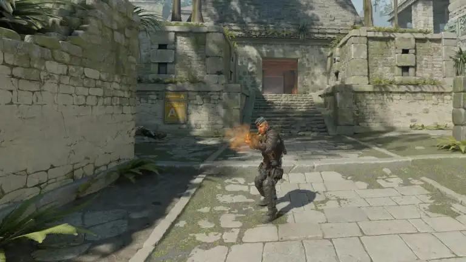
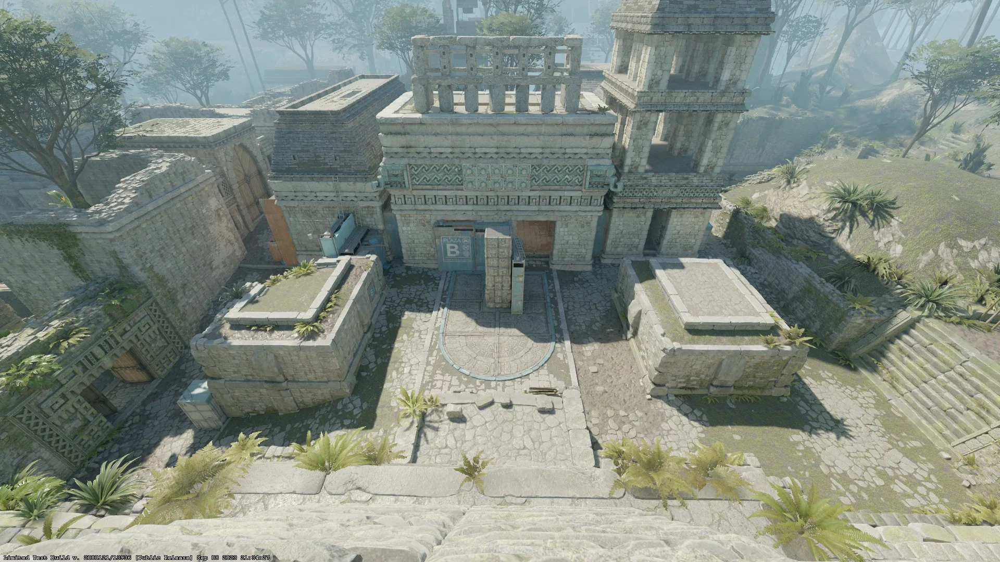
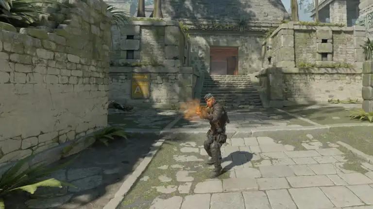
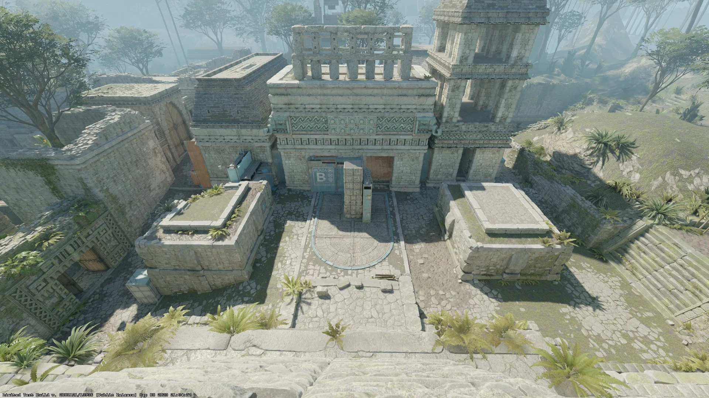

Antes Ancient no me gustaba nada, pero recientemente he estado jugándolo
bastante y ahora me gusta mucho.
Está ambientado en una especie de templo inca y es, visualmente, mi mapa favorito.
Me parece bastante balanceado porque
también es bastante estándar pero por algún motivo a la gente no le gusta y/o
no lo sabe jugar, así que es bastante fácil sorprender lurkeando o
aguantando peeks raros.